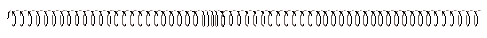

Une onde est la propagation d’une déformation. Plus particulièrement, une onde mécanique est une onde qui ne se déplace que dans des milieux matériels. Il n’y a donc pas de déplacement de matière, mais il s'agit d'un déplacement d'énergie mécanique.
Il existe 2 types d’ondes. Les ondes transversales, où la déformation se déplace perpendiculairement du point d’origine.
Les ondes longitudinales (son) où la déformation se déplace parallèlement à son point d’origine.
Une onde sonore est a 3 dimensions.
C’est à dire que le son peut se déplacer dans toutes les directions à partir de son point d’origine.
Célérité d'une onde : La célérité (ou vitesse de propagation) d'une onde parcourant une distance D en une durée DT est,
par définition, égale au rapport D / DT. On écrit :
V = D / DTV est en (m/s) lorsque D est en (m) et DT en (s)
Lorsqu’une source d’ondes et/ou un récepteur se déplacent,
la fréquence captée par le récepteur est différente de la fréquence émise par la source.
Cela constitue l’effet Doppler.
→ Pour le son, lorsqu’une source s et une récepteur r se déplacent le long d’un même axe,
l’effet Doppler donne la relation :
Les v sont les vitesses (m/s) dans le référentiel terrestre, f les fréquences (Hz), et c la célérité du son (m/s).
Au numérateur, signe + quand le récepteur se dirige vers la source, – sinon.
Au dénominateur, signe + quand la source va à l’opposé du récepteur, – sinon.
Disposer le vibreur sur l’emplacement prévu du bâti.
Le raccorder aux deux fils sortant
du capot, et connecter le cordon équipé dune fiche Din au pupitre de commande.
Positionner l’accessoire vibreur ( source ponctuelle, double ou plane) que vous désirez utiliser sur le bras
du vibreur.
Verser une quantité d’eau, la plus pure possible pour éviter les dépôts de calcaire,
suffisante dans la cuve.
Mettre en marche le boîtier de commande.
Pour un premier réglage, on positionnera le bouton A/B en position B, le bouton B
tourné vers la droite et l’inverseur 11 en position haute.
Le stroboscope et le vibreur doivent démarrer et vibrer, ramener le bouton B au milieu.
Le bouton de niveau 10 en position basse,
tournez-le jusqu’à ce que la pointe soit sur le point de sortir de l’eau, observez le signal obtenu
sur l’écran dépoli.
Agir sur le bouton amplitude si nécessaire.
Modifier la fréquence en agissant
sur le bouton B, et observer l’onde obtenue.
Remarque
: la fréquence lue sur l’afficheur est celle du stroboscope qui définit dans cette
position la fréquence de vibration.
Si vous commutez B/A pour visualiser la fréquence du vibreur,
la valeur donnée n’est pas opérationnelle, elle n’est valable que lorsque l’on travaille en position
asynchrone, c’est à dire, quand le stroboscope et le vibreur sont indépendants ( bouton 8 en
position haute).